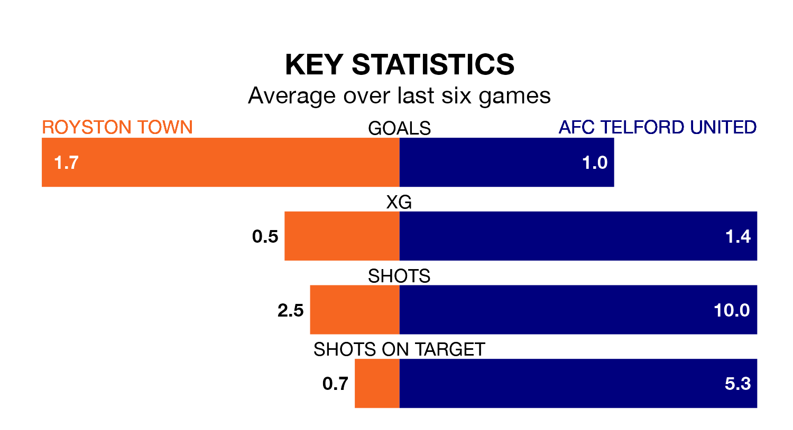

Royston Town are on a fantastic run ahead of hosting AFC Telford United at the Garden Walk Stadium on Tuesday, with 15 points collected from their last six games.
Royston have picked up five wins and one loss in their last six Southern League Premier – Central games, and face a Bucks side whose last six games have brought two wins and three draws.
Telford United are sixth in the table after 27 games, of which they have won 12 and drawn nine, earning 45 points.
Royston are seven places behind the Bucks in 13th, with 11 wins and five draws putting them on 38 points.
With 36 goals in 27 games so far this season, Town are scoring at below the league average rate with 1.3 goals per game. But they are conceding fewer than average too, letting in 39 goals at a rate of 1.4 per game.
The away team are also below average scorers, with 1.4 goals per game, compared to a league average of 1.5. They have conceded 0.9 goals per game.
Royston's last match was on January 30, a 1-0 loss against Alvechurch.
Telford United lost 2-0 against Needham Market last time out, on Saturday.
Updated: 10:28 (UTC), 06/02/24